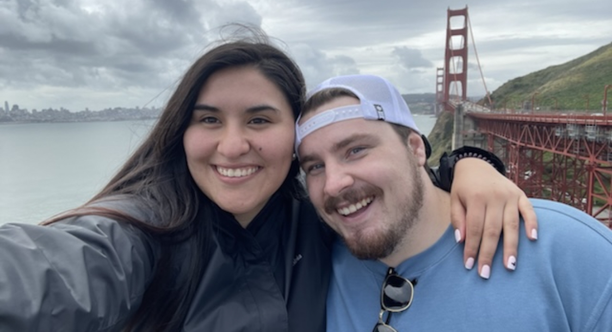

About me!
Hey there! My name is Maria Jose but I go by Cote. I'm 26 years old. I'm from Chile but I've been living in Utah for the last 4 years. I'm married to my amazing husband and we have a beautiful baby girl 3 months old. I used to work as administrative assistant until I had my baby and now I'm a stay at home mom. I served as a missionary for the church from 2017 to 2019 in the Chile Vina del Mar mission. My husband also served in Chile and that's how we connnected! I'm planning on learning more here and finishing this career and hopefully work from home so I can take care of my own kids. I love photography, cooking, music and watching movies. My perfect day is getting pizza and watching a movie at home. I hate shopping and I love dogs! Before I used to work as a photographer but I stopped for time but I'm planning on coming back soon. You can see my website below! I'm excited for this class!
Chile!
Chile is a long, narrow country that stretches along the western edge of South America, bordered by the Pacific Ocean to the west and the Andes mountains to the east. Known for its diverse landscapes, it ranges from the driest desert in the world, the Atacama Desert, in the north, to the glaciers and fjords of Patagonia in the south. Chile is also home to Easter Island, famous for its mysterious Moai statues. An interesting fact is that Chile is one of the world's leading producers of copper, and it has a rich wine culture, with vineyards dating back to the 16th century. The country's unique geography also means it experiences a wide variety of climates, from desert to temperate rainforests.